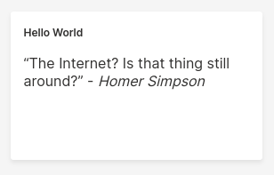

What's H2O Wave
H2O wave is an all in one front-end and backend solution to make real-time websites using python alone. Unlike the traditional way of making websites, you don't have to worry about HTML, CSS, or JS while making your webpages. You also don't have to handle HTTP requests in traditional sense. Whenever you make changes to data and save it, every instance where the data is displayed gets updated without the programmer tracking multiple instances.
Let us show you this behaviour using an example.
from h2o_wave import Q, main, app, ui
bean_count = 0
@app('/counter')
async def serve(q: Q):
global bean_count
# Was the 'increment' button clicked?
if q.args.increment:
bean_count += 1
# Display a form on the page
q.page['beans'] = ui.form_card(
box='1 1 1 2',
items=[
ui.text_xl('Beans!'),
ui.button(name='increment', label=f'{bean_count} beans'),
],
)
# Save the page
await q.page.save()
In the code above, the routing(don't worry if you don't know what it is), the user interface and the changes are all handled by H2O Wave alone. The output looks like below.
Installation
Installing H2O wave is a simple job with few steps. First of all, it is recommended to install H2O wave in a virtual environment. So let's create that. Now I'll start the virtual environment, and here we go, now we're ready to install H2O wave.
To install H2O wave in the virtual environment, run:
pip install h2o-wave
You can also run H2O Wave University app, which gives you a more hands-on approach on learning H2O wave than reading through docs.
To do that, first install H2O Wave University app using the command:
pip install h2o_wave_university
Then run the Wave University app using the command:
wave learn
Go to URL shown in the terminal, and you'll be able to learn H2O Wave using Wave University.
Making your first app
To create a project using H2O Wave, follow these steps:
-
Create a python file, you can use the following command
touch server.py -
Import H2O wave to the project
import h2o_waveor, for this example, you can just import the classes ui and site.
from h2o_wave import ui, site -
Look at the code below, it explains how you can handle routing, update info and create UI elements
from h2o_wave import site, ui
# Grab a reference to the page at route '/hello'
page = site['/hello']
# Add a markdown card to the page.
page['quote'] = ui.markdown_card(
box='1 1 2 2',
title='Hello World',
content='"The Internet? Is that thing still around?" - *Homer Simpson*',
)
# Finally, save the page.
page.save() -
Run your program:
python server.pyYou can see your program by entering http://localhost:10101/hello
It should look like the image below.
 -
That's the end of the start! You just created your first H2O Wave app! You're the best programmer in the world!
You can learn more on how to use H2O Wave using H2O University app or read Getting Started at H2O Wave website.